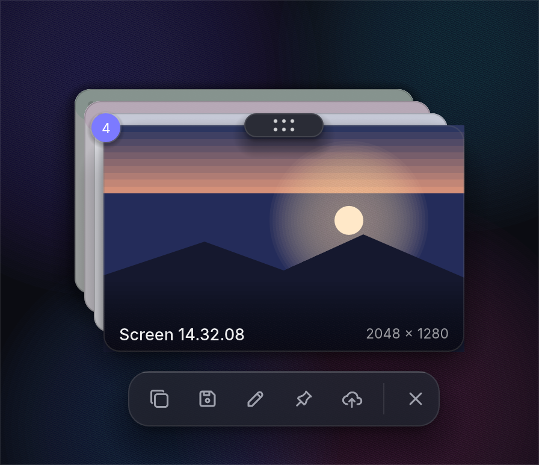
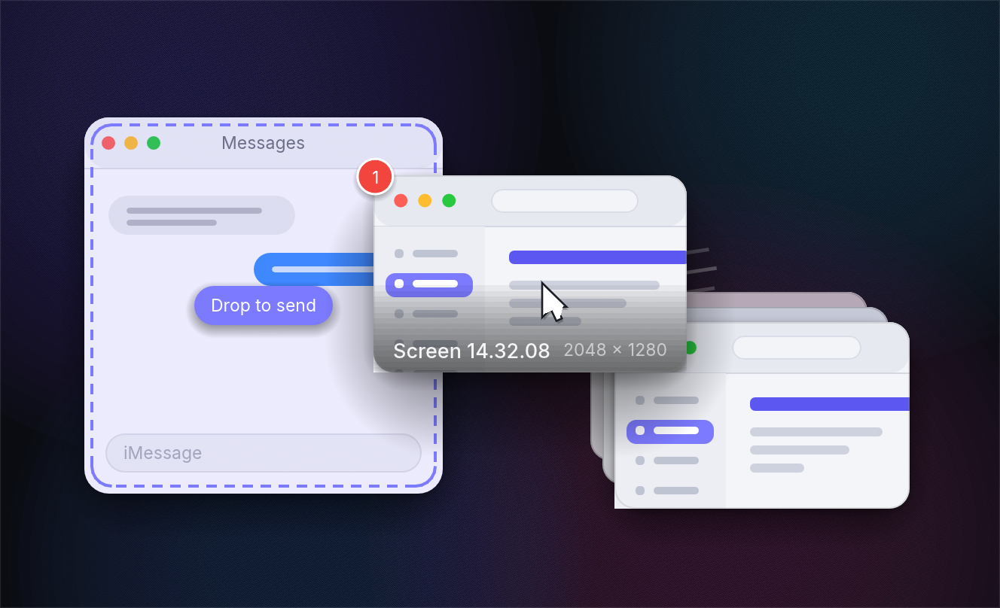
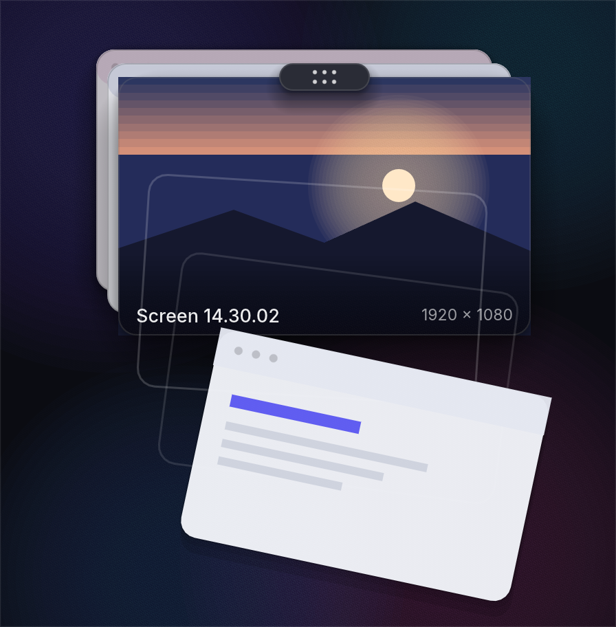
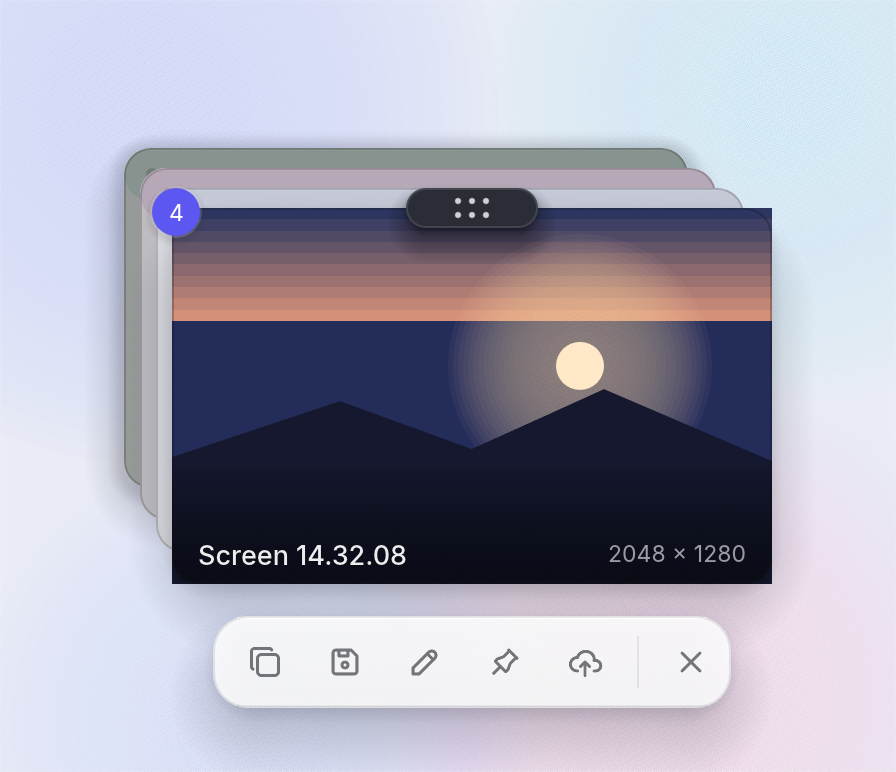
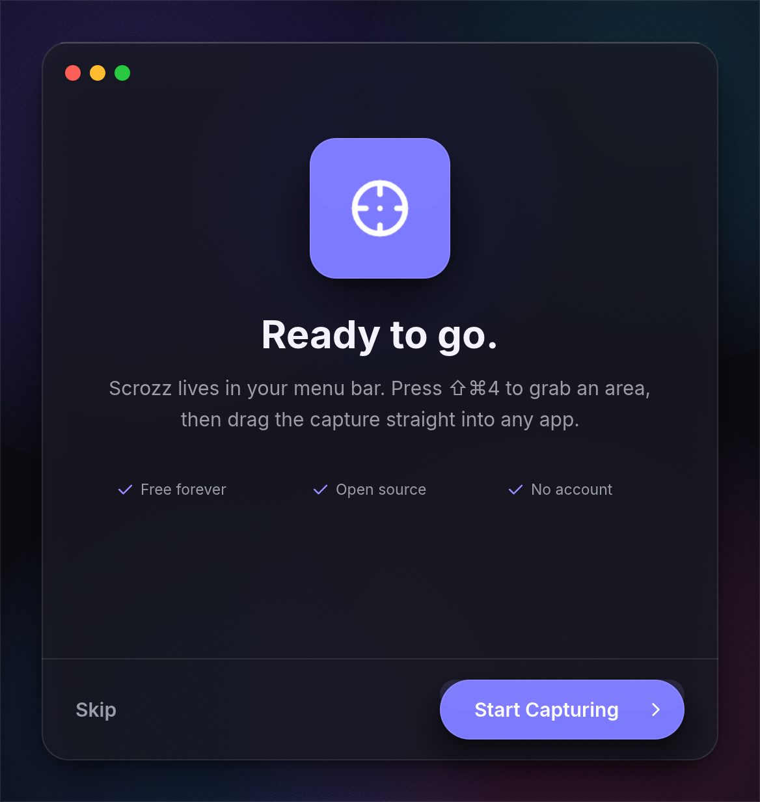
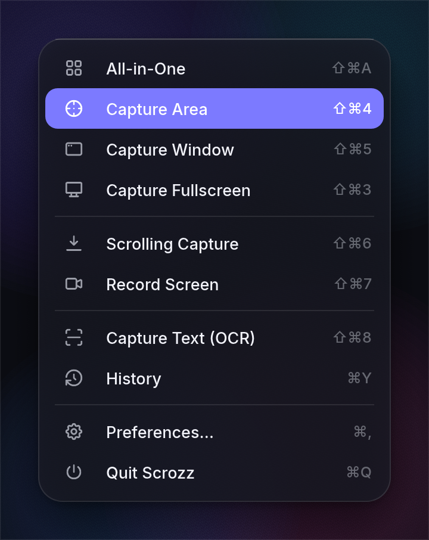
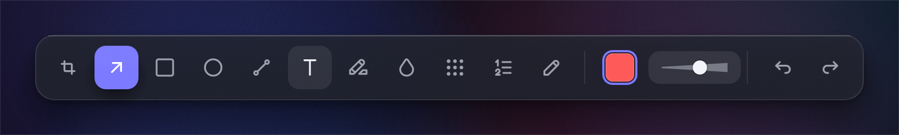
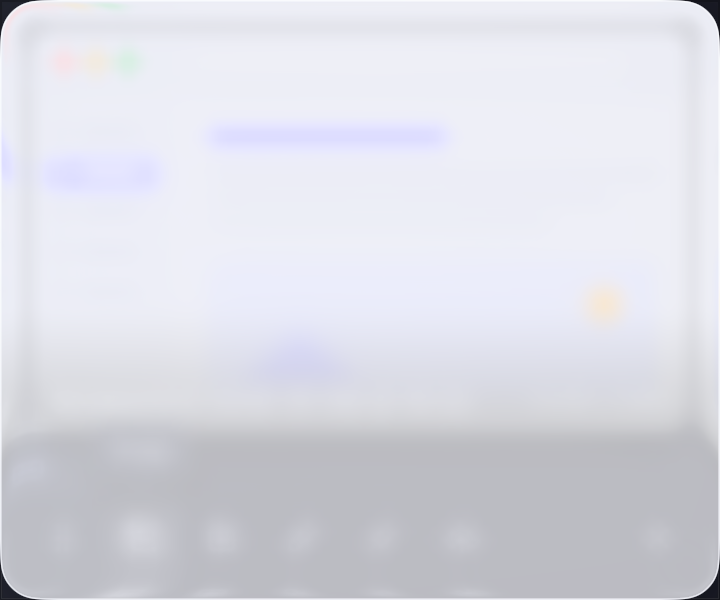
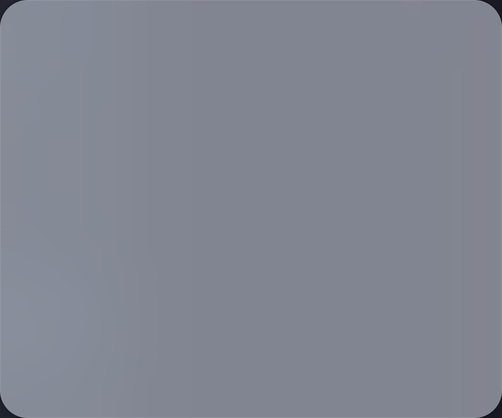
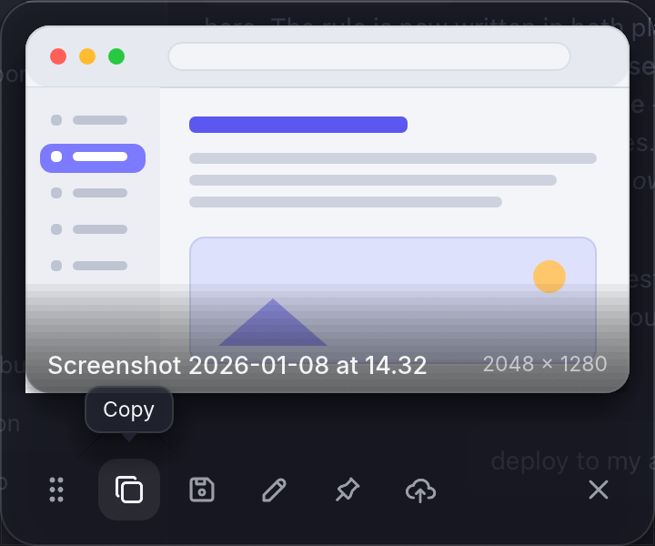

Scrozz — egui visual spike
10 surfaces · macOS 26 · Tabler icons (MIT)

Quick Access — the drag-first STACK (primary)
quick_stack_dark.png

Drag a capture straight into another app (hero interaction)
quick_drag_dark.png

Swipe-to-dismiss — top card flung away
quick_swipe_dark.png

Quick Access stack — light mode (range)
quick_stack_light.png

Onboarding step — type scale at display sizes
onboard_dark.png

Menu bar dropdown
menu_dark.png

Annotation toolbar
annotate_dark.png

NEGATIVE: Liquid Glass frosts the app content into ghosts
liquidglass_over_content.png

NEGATIVE: NSVisualEffect (HUD) fully occludes the app
vibrancy_over_content.png

Transparent / borderless / on-top window proof (earlier card layout)
transparency_proof.png